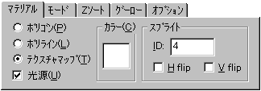
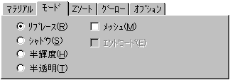
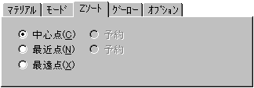
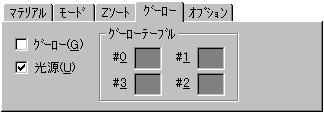
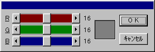
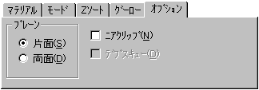

★Graphic Tools Guide
★3D Editorユーザーズマニュアル
★Graphic Tools Guide
★3D Editorユーザーズマニュアル

 |
「3D Editor」のアトリビュートの規格は、SegaSaturnのVDP1及びSGLの仕様に準拠しています。 アトリビュート編集機能をを有効に活用するためには、前述の両者に関する基本的な知識が必要になります。 |
|---|





| 処 理 | チェックボックス | |
|---|---|---|
グーロー | 光 源 | |
フラットカラー | OFF | OFF |
フラットシェーディング | OFF | O N |
テーブルグーローシェーディング | O N | OFF |
リアルタイムグーローシェーディング | O N | O N |

★Graphic Tools Guide
★3D Editorユーザーズマニュアル